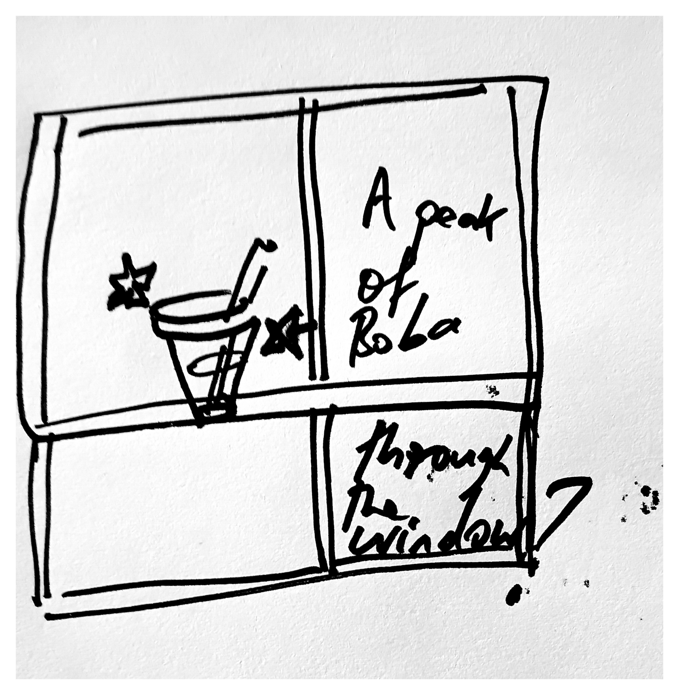

Print setup
Ctrl/Cmd + P · Paper size A4 · Margins: None · Scale: 100%
Issue 5 — generated in Fable-Offline via the bubble-tea-news-editor skill,
delivered here per that skill's cross-repo publish step. No Menace Watch this issue
(monthly, not weekly — next due around Issue 7); Issue 3's rotating cast and the two
Issue 2 leftovers filled the slots instead. All three ad boxes carry real advertisers
this issue: Overload NZ 2026 (continuing its run from Issue 3, now with its supplied
flyer art in place of the text-only version), Sir Tea (a new blog post, Bubble Tea 101),
and TeasMe (small-batch loose-leaf).
Auckland · Weekly Edition
BUBBLE TEA NEWS
Issue 5 · 14 August 2026 · Complimentary — please take onebubbletea.nz · est. 2026
Breaking · Kowhai Close
Front-Fence Pun War Reaches Third Property, Risk Assessed Low
Case definition: any front fence displaying a hand-chalked pun visible from the footpath. Three confirmed properties as of Tuesday, up from one after the corner dairy chalked "Big Boba Energy" beside its trading hours, prompting two households further down to respond in kind. The residents' association has added "footpath signage tone" as a standing agenda item, stopping short of a ban on puns specifically.
community-outbreak-bulletin
Shopping · Seeker's Eye
One Listing, Buried Under Forty Near-Identical Decoys
Winnie Zhao
Everyone searching "cloud sleeve cardigan" this week is drowning in the same forty AliExpress decoys: same stock photo, same fake urgency banner. One listing, three pages deep, actually ships the weight of fabric the photo promises. I've watched enough Snitches disappear from queues to know the real one when it's sitting still.
Gossip · Overheard
Darling, Nobody Asked About the Loyalty Card, But Here We Are
The Stickybeak
A certain Kowhai Close café owner (no names, darling, though the chalkboard practically signs itself) has been overheard telling regulars her "tenth cup free" card is "basically retired," which is stickybeak-speak for "ask again after the renovation." Meanwhile the corner dairy's pun war rages on, unpaid and unbothered. Someone alert the committee. Someone alert me first.
Politics · The Long View
The Silent Majority Wanted Angle Parking, and I Said So in 1969
They will tell you the Ponsonby Road parking review is a modern problem, solved by modern people, and none of it owes anything to me. It owes everything to me. I understood, long before any council subcommittee did, that the average citizen (the quiet ones, the ones who don't write submissions) wants his car exactly where he left it. Say what you will about the tapes. Nobody has released a tape of me being wrong about parking.
Richard Nixon
Weather · This Week
A Cold Front Approaches. So Did Everything, Once.
Dana Foley
By Thursday a southerly moves through Auckland like it has unfinished business: fourteen degrees, forty percent chance of rain, the kind of grey that asks nothing of you and gives nothing back. Bring a jacket. Bring the version of yourself that doesn't check the forecast twice. It will, against every dramatic instinct I have, just be a mild winter Thursday.
Bubble Tea Trivia
Did You Know?
Tapioca pearls are naturally pale and nearly flavourless on their own. The deep brown colour and caramel flavour behind "brown sugar" boba comes entirely from cooking them in a brown sugar syrup, a presentation popularised worldwide by Taichung's Tiger Sugar chain.
In Every Issue
A new logic puzzle
Fresh local trivia
A rotating cast of columnists
Local ad space, weekly
Menace Watch, monthly — the editor's turn
"Both are standing in a queue for something sweet, and both will wait for it."
— Priya Anand, The Pearl Index, on convention-goers and commuters
Joke of the Week
Why did the barista start a band? She already knew how to shake things up.
Overload NZ 2026
26–27 Sept · NZ International Convention Centre, Auckland CBD. Tickets: overload.co.nz — under two months out.
BUBBLE TEA NEWS · A weekly complimentary read for Auckland bubble tea retailers · All content satire/character-voice per each contributor's house disclaimer.
Bubble Tea News
Markets · The Floor
I Moved Eleven Basis Points Before Breakfast and Nobody Applauded
A Master of the Universe does not flinch at a rate revision, and he certainly does not flinch in yesterday's polo. I did not flinch. I merely recalculated, aloud, in front of the junior traders, the way a general repositions before dawn — sandy hair still damp from the shower, moccasins worn to the exact give of my own instep, because a man who buys new shoes for market open has already lost the morning. And if my voice cracked slightly on "recalculated," that was the espresso, not the number. The market corrected itself by lunch. I had already corrected first, which is the whole point of being early, and also, if I'm honest, the whole point of me. Marshall didn't care about any of it. Marshall wanted his walk.
Sherman McCoy
Sport · The Trained Eye
The Second-Half Substitution Nobody Was Watching For
T. Marlow
You learn to watch the water, not the wave. Same instinct works from the sideline. Everyone had their eyes on the striker Saturday; I had mine on the fullback who'd stopped chasing back two minutes earlier than anyone noticed. Tired legs give up ground before they give up the run, and by the seventy-eighth minute the result was already decided, just not yet on the scoreboard.
Food · The Lasagna Standard
Nine Layers, Judged Against the Only Lasagna That Matters
Garfield
A bubble tea shop has no business being this good at lasagna, and yet Nine Cups' Tuesday special earned six out of seven layers on a scale that exists solely in my head and answers to no one. Docked one layer for a menu that calls it "fusion." It is not fusion. It is correct, which is rarer and better. I deny everything about the to-go container.
Travel · Vacation Journal
Like, We Just Wanted a Large Boba, Man
Like, all we wanted was the biggest bubble tea on the menu and zero mysteries, you know? But then this glowing thing starts rattling the storeroom shutter at Nine Cups, and Scoob here goes "Rroo?" and I go "Not again," and forty minutes later it's just the delivery guy's headlamp catching the window at a weird angle. Anyway, we got the boba. Ranked seven out of ten, would flee again.
Shaggy & Scooby
Puzzle of the Week
The Topping Trade
Last week's Delivery Manifest, resolved in full: Milkwood's rider carried the oolong leaves outright by clue one, which left the tapioca pearls and condensed milk split between the Fetchly rider and a third, unnamed courier. Clue two ruled out Fetchly for the pearls, leaving condensed milk as the only load left to carry — the pearls went to the third rider by the same elimination.
Milkwood's delivery was the syrup restock.
The rider who restocked Steep & Sorted did not carry cup lids.
Brisk warm-up · which store restocked the cup lids? Answer next week — Ken Endo
Market Research · The Pearl Index
Cross-Tab: The Convention Crowd Drinks Just as Much as the Commute Crowd
Fielded this week against n=412: 46% of surveyed Swing Patrons also self-identified as attending at least one convention or expo in the last twelve months, margin of error ±4.8%. That is not a coincidence a pollster is allowed to shrug off. Whatever else divides a Tuesday commuter from a Saturday cosplayer, both are standing in a queue for something sweet, and both will wait for it. Recommend advertisers take note; one has.
Priya Anand, The Pearl Index
Rural Report · Whitlock's Round
Milk Solids Up Half a Percent, and Don't Let Grover's Farm Tell You Different
Clem Whitlock
Herd testing come back Tuesday and our solids are up half a percent on last season, which I mentioned to Grover down the road twice, casual-like, both times unprompted. He reckons his Jerseys are carrying the whole district. They are carrying his own paddock and nothing further, and I've got the docket to prove it. Good season for the milk going into every bubble tea cup north of the bridge, whatever Grover reckons about whose cows did the carrying.
In Memoriam
The Tenth-Cup-Free Card
Skeletor
A certain Kowhai Close café owner has, this week, quietly retired her tenth-cup-free loyalty card: "basically retired," in her own words, which I have found is what people say when they mean entirely and are too polite to admit it. I offer my condolences to whoever was on cup nine. I offer none to the card itself, which had grown, frankly, complacent. Power that isn't renewed is power that deserves to lapse. Grieve the free cup if you liked it. I never once qualified.
Ask the Captain
Confused in Kowhai Close
Horatio McCallister
"My ex and I are 'still friends' and I don't think either of us actually wants that." Confused, "still friends" be the fog banks of the heart. Ye can sail through 'em for years and never once see clear water. Name the thing plainly, one way or the other. A ship that won't commit to a heading just drifts. I know several such ships personally. Fair winds, arrr.
The Boba Side

The Boba Side — original pen-and-paper gag, hand-drawn
Next week: Issue 6 excludes only this week's roster, reopening M. Voss, Rebecca Black, Sebastian, Steve Jobs, Luke Skywalker, Daffy Duck, Alan Grant, Lewis Hamilton, Wren and the Te Mana Whakaatu classifieds format, alongside Robin Leach and Baxter Kline, still waiting since Issue 3. Menace Watch remains off until roughly Issue 7.